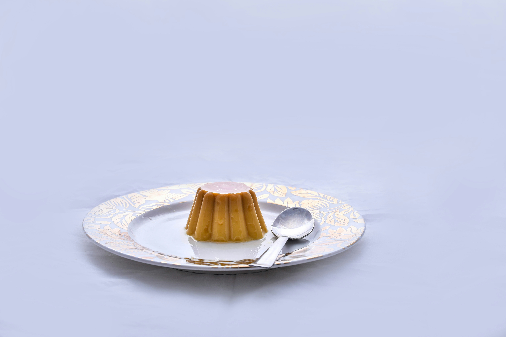

| SHAN ZU |
|---|
| $$ 293.277 COP |
Recetas
Ver todas las recetas
Entradas

Plato Fuerte

Guarnicion

Postre
Entradas
Plato Fuerte
Guarnicion
Postre

|

|

|

|
|---|
En [Nombre de tu Página], creemos que la cocina es más que solo preparar alimentos; es una forma de expresar amor, creatividad y tradición. Nuestra misión es reunir a amantes de la cocina de todas partes, ofreciendo una plataforma donde puedan descubrir, compartir y disfrutar de recetas deliciosas y accesibles.
Todo comenzó como un pequeño proyecto en la cocina de nuestra casa, donde la pasión por la gastronomía se transformó en una aventura culinaria. Con el tiempo, nos dimos cuenta de que había una gran comunidad de personas que, como nosotros, buscaban inspiración para sus comidas diarias y ocasiones especiales. Así nació [Nombre de tu Página], un espacio dedicado a la recopilación de recetas que abarcan desde entradas encantadoras hasta postres decadentes.